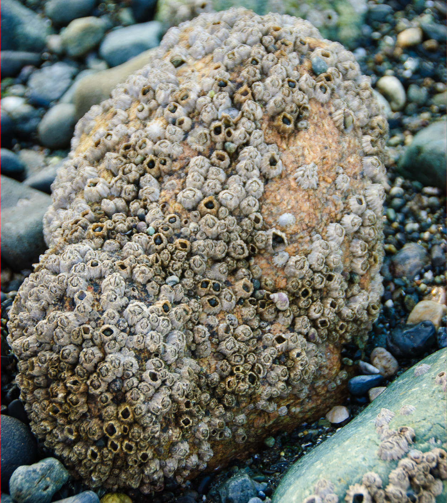

Intertidal Zone
<200m below sea level, very shallow
The Intertidal Zone is the first and most shallow benthic zone, close to the coast.
Organisms in this zone are are adapted to living in and out of the water.
 Barnacles are crustaceans that attach themselves to surfaces (and then live there for the rest of their life.) They live near the top of the intertidal zone, and eat plankton that pass by during a tide.
Other organisms that live in the intertidal zone include:
- Clams
- Starfish
- Sea Anemone
Sublittoral Zone
up to 200m below sea level
Sample Paragraph
Bathyal Zone
up to 4000m below sea level
Sample Paragraph
Abyssal Zone
up to 6000m below sea level
Sample Paragraph
Hadal Zone
the bottom of the bottom of the ocean
Sample Paragraph